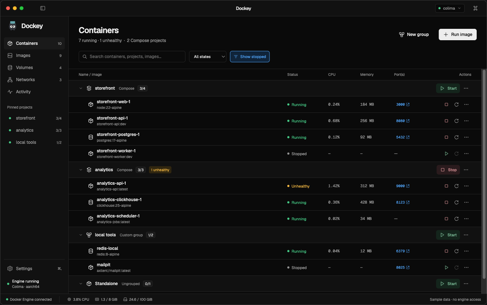
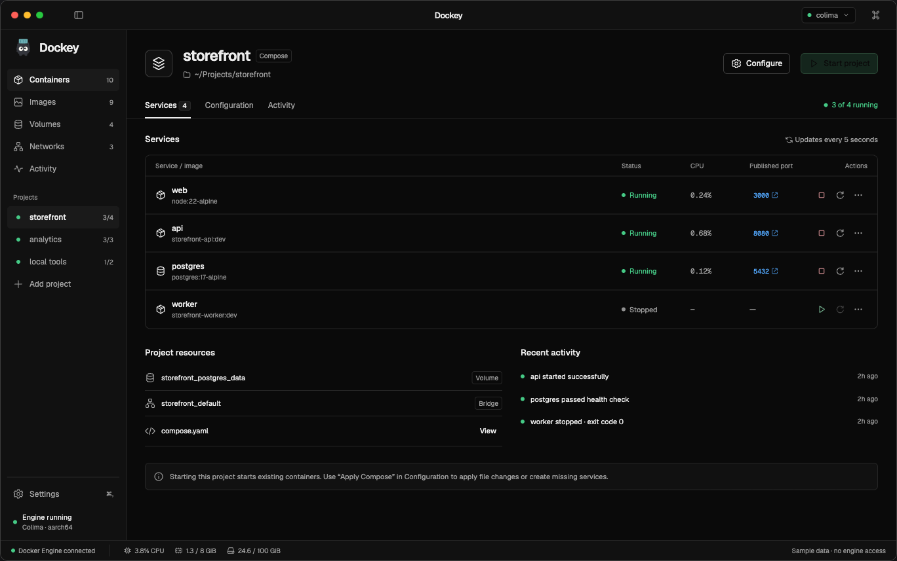
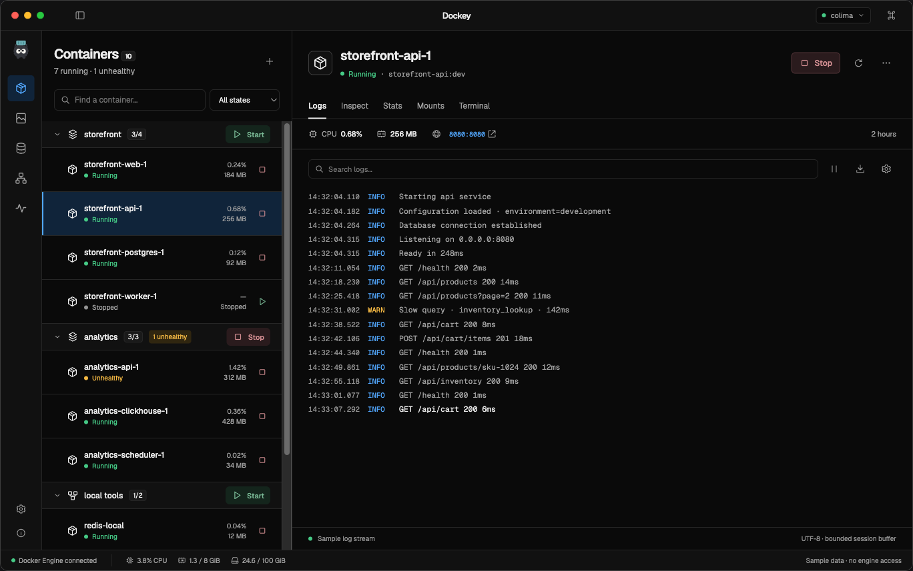
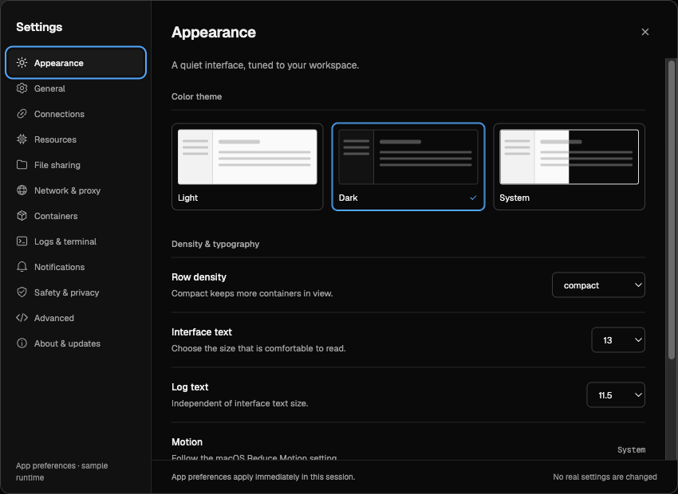

A
Grouped list
Selected directionA familiar, expandable overview of every project. Scan status and resource usage, start a group, or open one container.
Try grouped listThe same Geist-inspired system, original vector icons, and sample projects. Three different ways to organize the work.

A familiar, expandable overview of every project. Scan status and resource usage, start a group, or open one container.
Try grouped list
One project at a time, with services, Compose configuration, resources, and activity collected in one workspace.
Try project workspace
A compact hierarchy beside a persistent inspector. Move between containers while keeping logs, stats, and details in view.
Try inspectorAppearance, startup, connections, VM resources, file sharing, networking, containers, logs, notifications, safety, advanced options, and updates. App preferences are separate from runtime and project configuration.

49 original SVG icons, drawn on a 20px grid and reviewed at 16, 20, and 28px. Precise lifecycle controls and clear resource shapes, in both themes.